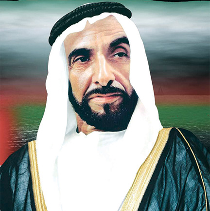

Sheikh Zayed Bin Sultan Al Nahyan, the first president of UAE was a man of
great vision. He always thought about the welfare of the people. He unified 7
emirates together. They were:-
- Abu Dhabi
- Dubai
- Sharjah
- Fujairah
- Ajman
- Ras al-Khaimah
- Umm al-Quwain

Sheikh Zayed was a president with great leadership skills. He always used to promote values by talking with them,
and meeting them regularly. He used to give us that encouragement that no one could. We will always remember him in our
hearts and that promote his values like
- Tolerance
- Progression
- Environmentalism
- Leadership
- Charity etc.